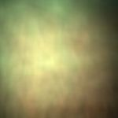

|
Abeer Banerjee I am currently a third-year AcSIR Integrated Ph.D. student at CSIR-CEERI, Pilani, India. My academic pursuits revolve around the exploration of learning-based image reconstruction methods for computational imaging, under the supervision of Dr. Sanjay Singh. Before joining CSIR-CEERI, I completed my bachelor's degree in Electronics and Communication Engineering from the IRPE, University of Calcutta, Kolkata, India. Beyond my scholarly endeavors, I find great fascination in the fields of philosophy and photography. Email | CV | LinkedIn | Google Scholar | Github |
{kind=link}
ResearchMy research interest lies at the intersection of computational imaging, computer vision, and machine learning. Presently, my work focuses on computational image formation and reconstruction in the low-data regime. I have received approval from my doctoral advisory committee to pursue my Ph.D. research in the realm of utilizing deep learning techniques to tackle imaging inverse problems. |
|
|
Reconstructing Synthetic Lensless Images in the Low-Data Regime
Abeer Banerjee,Himanshu Kuamr,Sumeet Saurav,Sanjay Singh BMVC, 2023 Project page / Video / Paper Our paper shows that it is possible to perform domain-restricted low-shot reconstruction of lensless computational images. We demonstrate an improvement in the reconstruction performance of untrained neural networks by providing very few domain-restricted images for pre-training. |
|
 
|
Physics-informed Deep Deblurring: Over-parameterized vs. Under-parameterized
Abeer Banerjee,Sumeet Saurav,Sanjay Singh ICIP, 2023 Project page / Paper We compare the reconstruction performance with untrained over-parameterized networks having over 30 million parameters. We employ a physics-informed consistency loss function to optimize our network, leading to faster convergence and better reconstruction quality. |
Miscellanea |
 |
Reviewer, ICVGIP 2022
Reviewer, ICVGIP 2023 |
|
The source code of this website was borrowed from here. |